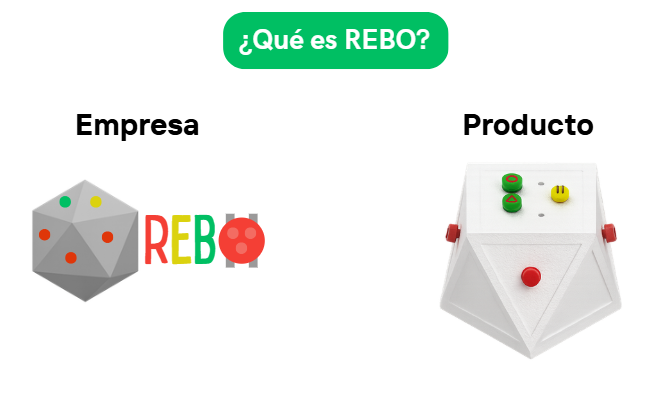
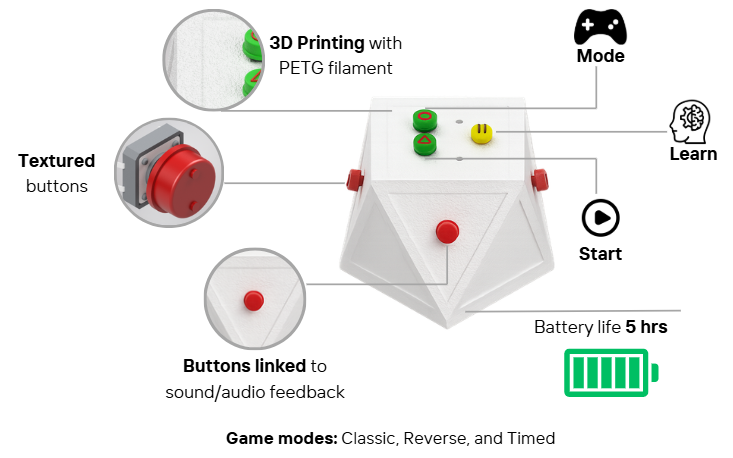

¿Qué es este proyecto?
El proyecto REBO es un dispositivo lúdico electrónico inclusivo diseñado para fomentar la interacción social y el desarrollo de habilidades cognitivas en personas con discapacidades. Este dispositivo combina elementos de juego con tecnología avanzada para crear una experiencia divertida y educativa.

El diseño tiene un fuerte enfoque inclusivo: está pensado principalmente para personas con discapacidad visual, garantizando al mismo tiempo que las personas normovisuales puedan utilizarlo y disfrutarlo por igual.
Estado Actual
Actualmente el desarrollo de hardware se encuentra en una etapa avanzada. Los logros hasta el momento incluyen:

- Diseño y manufactura de las piezas mecánicas.
- Ensamblaje de dos prototipos funcionales utilizando tecnología Arduino.
- Pruebas iniciales de lógica de programación y respuesta de componentes electrónicos.
REBO es un proyecto de titulación para Ingeniería Mecánica que busca desarrollar un dispositivo electrónico con función lúdica, inspirado en el juego clásico de "Simón Dice". El objetivo principal es ayudar a los usuarios a memorizar notas musicales a través de la interacción física. El diseño tiene un fuerte enfoque inclusivo: está pensado principalmente para personas con discapacidad visual.